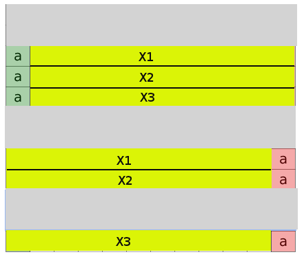

Santhosh's Home Page
Elegant exact string match using BWT
This post is the first of a series where we describe some interesting algorithms used in our product Avadis NGS. First post in this series is about string matching using BWT, a technique that forms the core of our aligner COBWeb. We have intentionally kept the usage of bioinformatics jargon minimum to benefit a wider audience.
This post describes an elegant and fast algorithm to perform exact string match. Why another string matching algorithm? To answer the question, we need to understand what the problem we are trying to solve is.
In short, the problem is to match billions of short strings (about 50-100 characters long) to a text which is 2 billion characters long. The 2 billion character string (referred to as the reference hereafter) is known ahead and is fixed (at least for a species). The shorter strings (called reads hereafter) are generated as a result of an experiment. The problem arises due to the way the sequencing technology works, which in its current form, breaks the DNA into small fragments and 'reads' them. The information about where the fragments came from is lost and hence the need to 'map' them back to the reference sequence.
We need an algorithm that allows repeatedly searching on a text as fast as possible. We are allowed to perform some preprocessing on the text once if that will help us achieve this goal. BWT search is one such algorithm. It requires a one-time preprocessing of the reference to build an index, after which the query time is of the order of the length of the query. (instead of the reference)
Burrows Wheeler transform is a reversible string transformation that has been widely used in data compression. However the application of BWT to perform string matching was discovered recently in this paper. This technique is the topic of this post. Before we get to the searching application, a little background how BWT is constructed and some properties of BWT.
BWT for a given text T is constructed as follows:
- Append a end of string character (say '$') to the text. This character should not be present in the text and is treated as the lexicographically largest character.
- Collect all the cyclic permutations of the text and sort them.
- Arrange all the sorted strings one below the other. The last column forms the BWT.
The image below shows the BWT transform for BANANA$.

A few things to note from the image
- The red column, as indicated, is the BWT of BANANA$'
- The yellow column, as indicated, is the Suffix Array. For every row, the element in the suffix array is the index into the original string of the suffix starting in that row. Note that if you have the suffix array, constructing BWT is straightforward. The above algorithm of performing a full sort on all suffixes to find the suffix array and BWT is very inefficient. Efficiently finding the suffix array will the topic for our next post in this series.
- The green column is just the sorted characters in the string.
Before proceeding we need to understand one interesting property of the BWT. The rank of a character is the BWT column is the same as that of the corresponding character in the fist column. This is illustrated in the image above using colors. The 2nd N in the BWT column correponds to the 2nd N in the first column, 3rd A in the BWT column corresponds to the 3rd A in the first column and so on. To see why this is the case, remember that all the rows in the grid are cyclic permutations of a single string. Let AX1, AX2, AX3 be three consecutive rows in the grid where A is the first character and X1, X2, X3 denote the rest of the row. As the rows are sorted lexicographically, X1, X2, X3 are sorted too. On cyclic shifts, we get X1A, X2A, X3A which are again sorted, hence in the same relative order in the grid. Note that now the A's are entries in the BWT in the same relative order. This is illustrated in the figure below.
Search using BWT
Our index data structure has the following
- BWT - Indexed access. We will denote this by BWT(i).
- Suffix Array - Indexed access. We will denote this by SA(i).
- First row - Queries : Start index, end index of an alphabet and index given alphabet and a rank. For example, find the index of letter 'G' with rank 3. This can be achieved by just storing the frequency of each alphabet in order. For example, for BANANA$, its enough to store 3A1B2N1$. This query can be answered by a simple walk over this compressed structure. We will denote the queries by Start(alphabet), End(alphabet) and IndexOf(alphabet, rank).
- Ranks in BWT - We need fast access to the following query : Get number of occurences of a particular character above a particular row in the BWT. For example, get the number of 'A's above row 5. One way to achieve this is to store at each row the frequency of each alphabet till that row. This can be achieved by a single pass over the BWT. In practice though, we don't store this at every row, but store at regular intervals. We will assume here that it is stored at every row for simplicity. We will denote this query by RankOf(index, alphabet)
Let T be the text searched on and Q be the query string. The algorithm is as follows
index = len(Q) # Walk the query backwords
next = Q[index--]
(start, end) = (Start(next), End(next))
while index >= 0:
next = Q[index--]
(startrank, endrank) = (RankOf(start, next), RankOf(end, next))
(start, end) = (IndexOf(next, startrank), IndexOf(next, endrank))
for i in range(start, end):
print SA(i)
The output of this algorithm are the indexes into the original text where the query is present. Not that error condition handling has been skipped in the pseudocode above for brevity. It involves checking if the range found at every loop is a valid range.
The visualization below explains the algorithm. Few points about the visualization
- Yellow text on the top indicates the text to search on and the yellow text on bottom the query
- Red column indicates BWT, orange the suffix array
- The grey part of the grid is not stored as part of the index. It is shown here just for clarity
- Rows highlighted by blue indicates the range where search till that point is successful
Lets step through the visualization for text ABRACADABRA and query ADA. Follow the points below by hitting on 'Step' button after each point.
- Remember that the query is walked from the last to first. The first character is 'A', which results in the range shown
- Next character is 'D'. Get the rank of 'D' on the BWT for the first and last rows on the current range. The ranks as shown in the tooltips are 0 and 1. The new range is determined by the rows where 'D' has rank 0 and rank 1 on the first column. This is shown by the new range
- Now the final character 'A' again. Performing the the same steps as above, we get the final range as the row '3'. The corresponding element on the suffix array is '5' which is the index in the original text where 'ADA' starts
Play around with the visualization with different texts and queries to understand the algorithm better.
Links
TODO
Misc
TODO